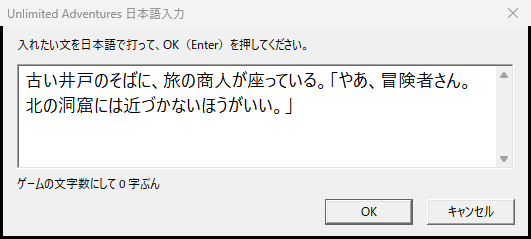

どんなソフト？
アンリミテッド・アドベンチャーズは、1993年に SSI から発売された AD&D 公式ライセンスのソフトです（開発は MicroMagic）。「プール・オブ・レイディアンス」に始まるゴールドボックス・シリーズと同じ仕組みの RPG を、自分で作って遊ぶことができます。
マップを描き、壁や背景の絵を選び、マスごとに「文章を見せる」「戦闘」「店」「質問」などのイベントを置いていくと、冒険が 1 本できあがります。作った冒険はその場で遊べ、人に渡すこともできます。見本として、フォーゴトン・レルムの辺境の町を舞台にした冒険「Heirs to Skull Crag」（スカル・クラッグの後継者）が付いています。
入れ方
- ダウンロードした
UnlimitedAdventures_JP.zip を展開します。
- 中の
winmm.dll を、ゲームの DOSBOX フォルダ（DOSBox.exe があるフォルダ）にコピーします。
Steam のライブラリで「Forgotten Realms: The Archives - Collection Two」を右クリックし、「管理」→「ローカルファイルを閲覧」で開いて、games\Unlimited Adventures -ENG\DOSBOX に進みます。
- いつもどおり Unlimited Adventures を起動します。
GOG 版の DOSBox（0.74-2.1）にも合わせてあります。GOG 版でも、ゲームを入れたフォルダの中の DOSBOX フォルダに winmm.dll を置いてください（GOG 版のゲーム本体は Steam 版と同じ内容で、GOG 版の DOSBox で日本語になることは確かめましたが、GOG 版のランチャーから起動しての動作はまだ確かめていません）。
ゲームのファイルは書き換えません。日本語化は、ゲームの動いているメモリの上で行います。
外し方
DOSBOX フォルダの winmm.dll を消すと英語に戻ります。セーブデータはそのまま使えます。
日本語の入力
DOSBox の中では Windows の日本語入力（IME）が使えないので、次のようにして入力します。
- イベントの設定ページで、文章の欄をクリックして文字を打てる状態にします。
- F12 キーを押すと、Windows の小さな入力欄が開きます。
- そこに普段の日本語入力で文を打ち、OK（Enter）を押します。
- 打った文が、ゲームの文章の欄に入ります（1 字ずつ送るので、長い文は数秒かかります）。

F12 で開く入力欄
- 入れた文は、エディタの欄にもプレイ中の画面にも日本語で表示されます。Backspace・Delete・左右の矢印キーは、日本語 1 字ぶん動きます。
- 日本語 1 字は、ゲームの文字 2〜3 字ぶんの場所を使います（かなは 2 字ぶん、漢字は 3 字ぶん）。文章の欄 1 つに入る日本語は、かなだけなら約 110 字、漢字まじりなら 80〜90 字ほどです。
- 文章の欄では、1 行に入るのは日本語で 12〜19 字ほどです（欄の右側が空きます）。プレイ中は画面の幅いっぱいに折り返して表示されます。
- 使える字は、ひらがな・カタカナ・JIS 第 1・第 2 水準の漢字と記号です。
- 全画面表示では入力欄が見えないことがあります。日本語を入力するときはウインドウ表示にしてください（Alt + Enter で切り替えられます）。
日本語で作った冒険について
- 日本語は、冒険（デザイン）のファイルの中に、英字と記号の組み合わせとして保存されます。ファイルの形は元のままなので、このパッチを入れていない Unlimited Adventures でも読み込めますが、日本語のところは記号の並びに見えます。日本語で作った冒険を人に渡すときは、このパッチも入れてもらってください。
- 英語で作られた冒険は、そのまま遊べます（文章は英語のままです）。ただし、文章の中に
# $ < = > [ ] の記号があり、すぐ後ろに英数字などが続くと、そこが日本語の字に見えることがあります。
使うときの注意
- 日本語は 1 字 8 ドットの美咲フォントで、英字 1 字と同じマスに表示します。
- メニューの項目は、キーの英字の後ろに日本語を出します（例:
P置く S選択 C中止）。いつもどおり英字のキーで選べます。
- 起動のあとに出る「規則書の○ページの○番目の単語」を聞く画面は、Steam 版・GOG 版では何を入力しても先へ進めます。
- 日本語の入力を確かめたのは、イベントの文章の欄（文章 1〜3）です。ボタン（選択肢）の名前など 1 行の入力欄での日本語入力は、まだ確かめていません。キャラクターやデザインの名前は英字で入力してください。
- 文章の欄をマウスでクリックしたときのカーソルの位置は、日本語の字の位置とずれることがあります。矢印キーで合わせてください。
- 日本語の入力は、作者の環境で自動の操作によって確かめました。うまく入らない、入力欄が出ないなどの不具合があれば、下の Issues でお知らせください。
- 付属の説明書（UAHELP.TXT、PDF）、絵として描かれた文字、キャラクターの名前は英語のままです。
- 付属の冒険は冒頭の場面までを実際に遊んで確かめました。先の場面で不自然な訳を見つけたら、お知らせください。
更新履歴
ご意見・誤訳の報告
誤訳や不自然な訳に気づいたら、GitHub の Issues で教えてください。
クレジット
- 日本語の表示には美咲フォント（門真 なむ さん）を使っています。
- 配布物に原作のプログラムやデータは入っていません。このパッチの使用は自己責任でお願いします。